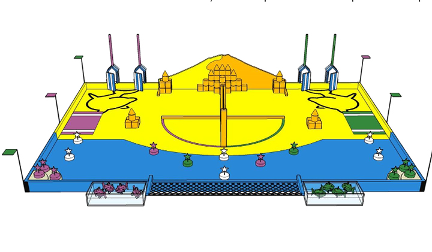
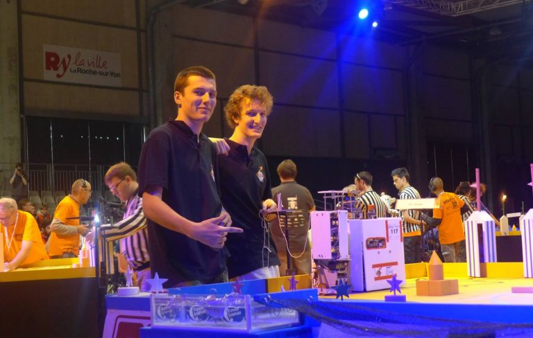
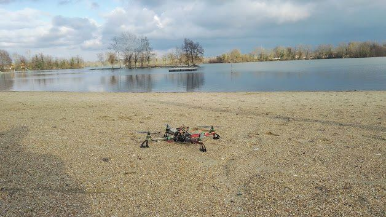

Bonjour à toutes et à tous ! J'espère que vous avez eu le temps de voir la Vidéo Des Arts proposée par le BDA et que vous avez apprécié la contribution de Galiléo ! Si certains n'ont pas eu le temps de la visionner, vous pouvez directement aller voir notre partie ici :
https://www.youtube.com/watch?v=OeHPCotrTjQ
Comme indiqué dans la vidéo, nous avons également réalisé une vidéo montrant la construction du robot. Vous pouvez y admirer notre talentueux -et absolument sous payé- président façonner le robot pièce par pièce jusqu'à obtenir ce que vous avez pu voir dans la vidéo. Cette vidéo est disponible ici :
https://www.youtube.com/watch?v=qMk_Ew1-NcA
N'hésitez pas à nous faire des retours sur ces vidéos et à aller voir la vidéo complète proposée par le BDA, elle vaut le coup ! Bonne journée à tous ! Le bureau Galiléo 2019-2020.
Venez nous rencontrer lors de la Coupe Rhône-Alpes de Robotique qui se déroulera le samedi 20 mai à l'INSA à Villeurbanne (69) pendant les 24H de l'INSA ! Cet événement sera un premier entraînement en vue de la Coupe de France de robotique organisée par Planètes Sciences qui arrive à grands pas !
Venez découvrir nos robots, nos sponsors et leurs premiers pas sur la Lune !
Le Wei 2016 s’est déroulé à Torreilles, tout près de l'Espagne. Le drone avait pour mission de couvrir l’événement avec un maximum de vidéos. Suite aux aventures sous-marines de l’an dernier, des précautions étaient inévitables. Pour Galiléo, aucun problème. Une frite, une chambre à air, beaucoup de scotch, des couleurs pimpantes et le drone était "Ready for the Beach" !
Le drone a entièrement fait peau neuve avec une nouvelle carte (Arducopter) basée sur un Arduino méga, avec baromètre et GPS. Ceci lui permet de se déplacer seul et d'effectuer un retour maison en plus d'une meilleure stabilisation. Il a un module Bluetooth pour communiquer avec la station au sol, une nouvelle structure avec des pieds pour un atterrissage plus doux et mieux contrôlé, ainsi que de nouvelles batteries pour une meilleure autonomie.
Les premiers tests sur la plage ont été magnifiques bien que difficiles à cause du vent fort.
Le drone a terminé son WEI en haut d’un pin, avec un pied et des hélices cassés. Récupéré, un problème de guidage a été détecté, et après vérification, le souci était dû à la carte électronique. Affaire à suivre !
La coupe de France de Robotique, le plus gros projet de l’année de Galiléo !
Pour resituer, la Coupe de Robotique est une compétition organisée par Planètes sciences (Site planètes sciences) tous les ans, au cours de laquelle des équipes, pour la plupart issues d’associations et d’écoles, s’affrontent sur une table de jeu. Le but étant de marquer le plus de points possibles à l’aide d’un ou deux robots autonomes, en effectuant des tâches données, sans jamais toucher le(s) robot(s) adverses. Un match dure 90 secondes.
Cette année, la coupe s’est déroulée du 4 au 8 mai à la Roche-sur-Yon en Vendée. Le thème était The BeachBots. Les épreuves étaient :
Ramener des coquillages (palets de bois surmontés d’une tige en métal) sur la serviette (zone de départ) (2 points par coquillages)
Construire un château dans la zone de construction à partir du sable (cônes, cylindres et cubes de bois) (2 points par bloc de sable dans la zone de construction + 2 points par bloc d’une tour/muraille + 12 points si le modèle “château” était construit)
Pêcher des poissons (percés d’anneaux aimantables) à partir d’un bac rempli d’eau et les déposer d’un un filet adjacent. (5 points par poisson hors de l’eau, 10 points si hors de l’eau et dans le filet)
Fermer les 2 portes des cabines de plage et ainsi hisser leurs drapeaux (10 points par portes)
Déployer un parasol (funny action) dans les 5 secondes qui suivent la fin du match (20 points).
(Pour plus d’informations sur le règlement 2016 voir : ici (EN) ou ici (FR))
Table de jeu Coupe de Robotique 2016
Nous avions choisi de construire 2 robots (Couverture par l’école). La stratégie était la suivante : Le gros robot devait pousser le tas de sable en face de la serviette dans la zone de construction, puis fermer les portes des cabines de plage. Il allait ensuite prendre un maximum de bloc dans le gros tas de sable au fond de la table (la dune) et le ramenait sur la zone de construction. Pendant ce temps, le petit robot pêchait les poissons à l’aide d’un bras magnétique. C’est le gros robot qui portait le parasol. Nous visions donc des matchs à 100 points.
2 présidents, 2 robots, une histoire d’amour électrique
Nous avons passé les homologations statiques et dynamiques avec succès. Mais par la suite, nous avons commencé à rencontrer des problèmes… Pour le petit robot, nous avons eu un problème de batterie (au plomb). Nous n’avions pas d’asservissement vitesse et des codeuses directement sur les moteurs. Par conséquent, la répétabilité était moyenne. Il était donc totalement décalé par rapport à sa position voulue et essayait donc de se replacer sans y arriver. Pour le gros robot, il n’était simplement pas prêt à temps, le code n’étant pas totalement écrit. De plus, nous avions des problèmes avec la texture du terrain sur laquelle le robot dérapait voir déchaussait. Et enfin, nous avions du mal à attraper les blocs de sable car ils étaient à angles vifs contrairement à ceux avec lesquels nous nous entraînions qui étaient à angles chanfreinés.
En réalité, notre plus haut score a été de 60, ce qui nous a tout de même permis un classement final de 110ème/150. Cependant, en plus de l’aspect technique/robotique, cette expérience a été riche humainement. Nous étions logés au lycée des Establières (leur site) qui a mis à notre disposition des grandes salles de classe nous permettant de travailler au calme, de dormir un peu (parfois), de nous entraîner, bref d’être efficaces et nous les en remercions. Nous avons pu voir, pendant la coupe, des robots extraordinaires.
Wall-E et Eve
Nous avons discuté, chanté, mangé, échangé avec énormément de gens, été suivis dans les coulisses (article ici) où Mayeul J., le président, a pu donner ses impression. Enfin, nous avons fait la connaissance du plus gros sponsor de cet événement, l’entreprise Seprogroup (leur site) qui nous a décerné, en accord avec planète sciences, le prix coup de cœur du jury, nous ouvrant par la même occasion les portes de la coupe d’Europe ! Et oui, c’était la cerise sur le gâteau car la coupe de France de robotique sert de qualifications nationales pour la coupe d’Europe de robotique (le site). Seprogroup nous a offert une chance incroyable et nous les remercions particulièrement d’avoir cru en nous et d’avoir récompensé notre côté “débrouillard/récupération de matériel dans les bennes de l’école” qui les a touché en suivant leur philosophie je cite : ” Un ingénieur sait faire beaucoup avec peu”. Pour la première fois dans l’histoire de Galiléo, nous sommes montés jusqu’en coupe d’Europe.
Seprogroup et prix “coup de cœur du jury”
Eurobot s’est déroulée cette année les 11 et 12 juins au Kremlin-Bicêtre, au sud de Paris. Cette compétition regroupait 32 équipes et représentait les pays suivants : la France, l’Espagne, la Pologne, la Turquie, la Russie, Taïwan, la Roumanie, la Serbie, la Suisse, l’Allemagne, le Royaume-Uni, la Belgique, le Maroc et le Canada (une Europe plutôt vaste en somme). Le but et les épreuves des matchs étaient les mêmes que pour la coupe de France. Cependant, nous avons ré-usiné nos robots et changé notre stratégie.
Les deux robots en nouvelles versions et homologués !
Désormais, le petit robot a une base rectangulaire qui lui permet de pousser. Il est alors chargé de pousser le premier bloc de sable, en face de la serviette dans la zone de construction, et de fermer les portes des cabines de plage. Il doit ensuite, grâce à sa face creusée en demi-cercle, ramasser les coquillages et les amener sur la serviette. Pendant ce temps, le gros robot fonce vers la dune pour attraper un maximum de sable avant l’équipe adverse et le ramener dans la base de construction. Une fois son dépôt effectué, il peut se diriger vers le bac à poissons, où il pêche grâce à une plaque aimantée sur son flanc tous les poissons d’un coup et les dépose ensuite dans le filet. A la fin du match, il déploie son éventail orange horizontalement qui constitue son parasol.
Cette stratégie nous a permis d’augmenter notre meilleur score à 80 points ! Malgré ces améliorations, d’autres problèmes sont survenus. La base du petit robot s’est fendue mais surtout, au vu du cours laps de temps entre les deux coupes, nous n’avons pas pu résoudre tous les problèmes du code. Cependant, nous n’avons pas fini dernier ! Nous sommes 29ème/32 et nous comptons bien y retourner l’année prochaine !
Certificat de participation à Eurobot 2016
D’ailleurs en parlant de l’année prochaine, c’est à dire cette année, le sujet est Moon Village, un sujet qui va comme un costume de cosmonaute à Galiléo ! Vous pouvez retrouver le règlement ici (EN) ou ici (FR) (attention version béta) en attendant de nous y retrouver en circuits et en profilé.
Suite aux essais de vols positifs du drone, nous l’avons emmené à l’intégration avec nous. Le premier vol c’est ponctué d’une rencontre très attachante avec un arbre. Décroché à base de lancés de tongs particulièrement bien calibrés, nous en avons quand même tiré quelques images des beer pong. Suite à quelques réglages techniques, nous avons retenté l’expérience lors de la « foam party ». Après un vol mitigé, le drone s’élève trop haut et finit par se déconnecter de sa console de guidage. Le système de sécurité se déclenche, et le drone va pour se poser tranquillement, sans dommage. C’était sans compter sur le lac juste en dessous. Nous avons donc assisté, impuissants, à la chute inévitable (mais contrôlée) de notre très estimé drone jusqu’aux abîmes gelées du lac vert. Le lendemain, munis d’un grappin bricolé sur place, nous empruntons un pédalo géant ainsi qu’un petit bateau moteur et partons à la pêche. Après 2 heures à plonger dans une eau à 18°C et des tonnes de kilos d’algues longues ramassées, nous rentrons les mains vides et le cœur lourd. Les bus nous ramenant à Lyon nous attendent, nous n’avons plus le temps de chercher : il faut se résigner et partir.
16 Janvier 2016, presque 4 mois plus tard.
Un weekend frileux, deux courageux galiléens se lèvent et s’emmitouflent. Nous avons décidé de ne pas abandonner ! Direction le camping du WEI. Nous y retrouverons un ami plongeur et sa femme. Notre contact sur place nous prête un bateau électrique. Nous nous équipons et délimitons un périmètre de chute probable du drone sur le lac. Le moteur gronde, le plongeur a enfilé sa combinaison, son masque et ses bouteilles : c’est parti. Nous le suivons sur la berge, anxieux. L’attente commence. De temps en temps, une petite tête noire ressort de l’eau calme, nous indiquant la position du plongeur. 54 minutes d’attente plus tard, nous commençons à désespérer. L’eau est trouble, le temps est froid, nous avons peur que le drone ait dérivé, ou que les immenses algues longilignes qui jonchent le fond du lac ne le cache à jamais. De plus, la réserve d’air des bouteilles s’amenuisent de minute en minute et leur limite approche. Mais tout à coup, après 1 heure d’attente et 3 doigts perdus (gelés), nous voyions une croix sortir de l’eau : Victoire !!! Revenu sur le quai, nous félicitons le héro et prenons un thé bien mérité : l’eau était à 8°C. Nous vérifions rapidement l’état du drone : la structure n’a pas bougé, les hélices sont intactes, et la GoPro est restée bien étanche dans son étui. Mais malheureusement, la batterie est gonflée et les cartes semblent bien humides et vaseuses… Rentrés à CPE Lyon, sous les holàs d’un accueil glorieux, nous courrons jusqu’à notre bloc opératoire attitré : le local. Premier test, nous le mettons sous tension. Bip bip bip, le cœur marche ! Le soulagement est intense. Le drone a étonnamment bien tenu ces 4 mois sous l’eau. Il s’agit désormais de lui refaire une beauté, et de le remettre sur pied. Nous démontons, nous dévissons, nous séchons, ça sent la vase… Un après-midi sera nécessaire à tout laver et démonter. Il est maintenant temps de laisser notre aventurier se reposer.
Drone repêché
Fin Août 2016.
La nouvelle année s’éveille, ça sent le soleil et surtout l’intégration. La passation a été réalisée, les anciens sont partis, laissant la place aux nouveaux. C’est le moment de sortir le drone du placard. Remonté dans la sueur et le sang du nouveau président, ces nouvelles hélices vertes brillent au soleil et il se laisse doucement apprivoiser par les galiléens. Dans 3 semaines, il faudra rejouer les filles de l’air. A suivre…